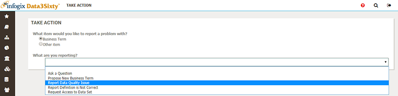
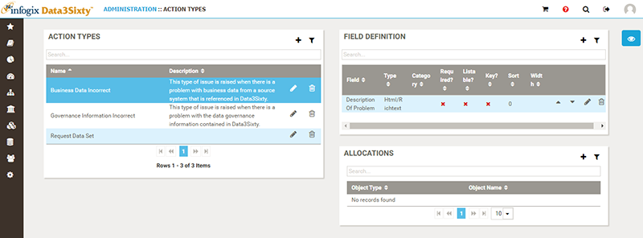

|
|
Defining Action Types
As an Administrator, you can establish Action Types to enable users to take actions on an asset, such as raising issues or suggesting new business terms. When you create an Action Type, you are defining the information that the user will need to complete when they take that type of action. For example, you might create an action type named "Data quality issue" to allow users to raise data quality issues.
Action Types are closely related to workflows. Generally, once you have defined an Action Type, the next step would be to build a workflow around it. The workflow determines what happens after a user has taken the action, and allows you to route issues to the relevant person who will determine the next steps.
Tip: Once you have followed the steps in this topic to create an Action Type, see Creating an action type workflow to walk through an example of building a workflow around an Action Type.
By default, the system includes two issue types for reporting:
- Business Data Incorrect
- Governance Information Incorrect
You can create additional Action Types and define fields to specify the information that users will need to provide when they take that type of action:
- Click the Administration icon on the left of the screen and select Workflow > Action Types.
- Click the Add button in the top right corner of the Action Types panel to create a new issue type.
- In the New Action Type panel, type a Name and a Description . The Name that you enter is the value that users will be able to select when they click the Take Action button, for example "Report Data Quality Issue":

- Click Save.
- Once you have defined a name and a description for the Action Type, you can add new custom fields by clicking the Add button on the Field Definition panel to further tailor the information that users will need to provide when they choose the selected Action Type.
For example, for a data quality issue, you may want to add a list type field where users can select from a pre-defined list of data quality issue types, such as accuracy or completeness.
Tip: For list type fields (where you have selected List for the Input Type property), you can select a Reference List item from the Type of List menu to use a pre-defined set of options. See Reference lists for more information.
Tip: End users can raise actions using the categories that you have created by clicking the Take Action button, see Raising issues.
Editing or deleting Action Types
To edit or delete an existing Action Type, click the Edit or Delete icon to the right of the selected issue type in the Action Types panel.

Allocations
You can limit Action Types to a specific asset so that users can only assign an issue to a certain category if the issue relates to a specified object type.
- On the Action Types page, select an item in the Action Types panel. For example, to restrict the types of assets that can be based on the "Business Data Incorrect" Action Type, select Business Data Incorrect from the Action Types panel.
- Click the Add button in the top right corner of the Allocations panel.
- Select an Asset Type from the list. For example, select Glossary: Business Term to limit the availability of the "Business Data Incorrect" Action Type to Business Term objects.
The new allocation will apply to the selected Action Type.
When you have defined a new Action Type, the next step is to build a workflow around it, see Creating an action type workflow.